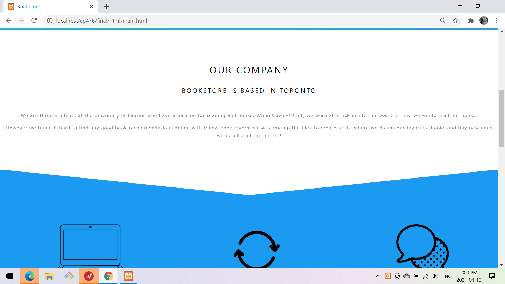
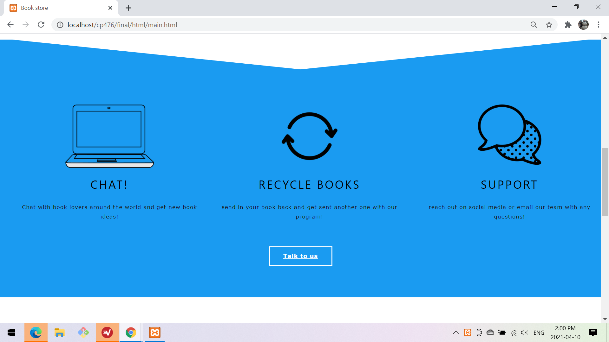
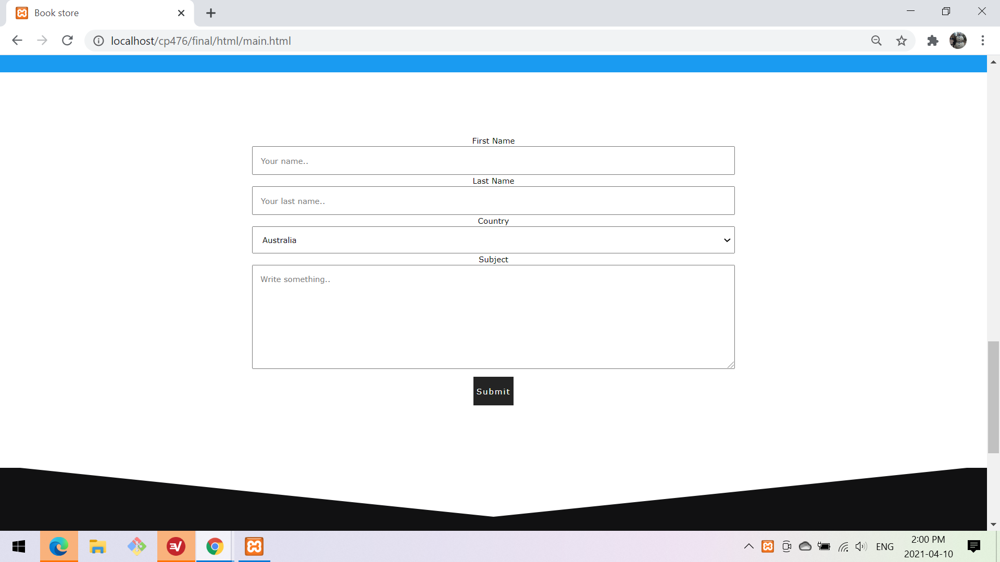
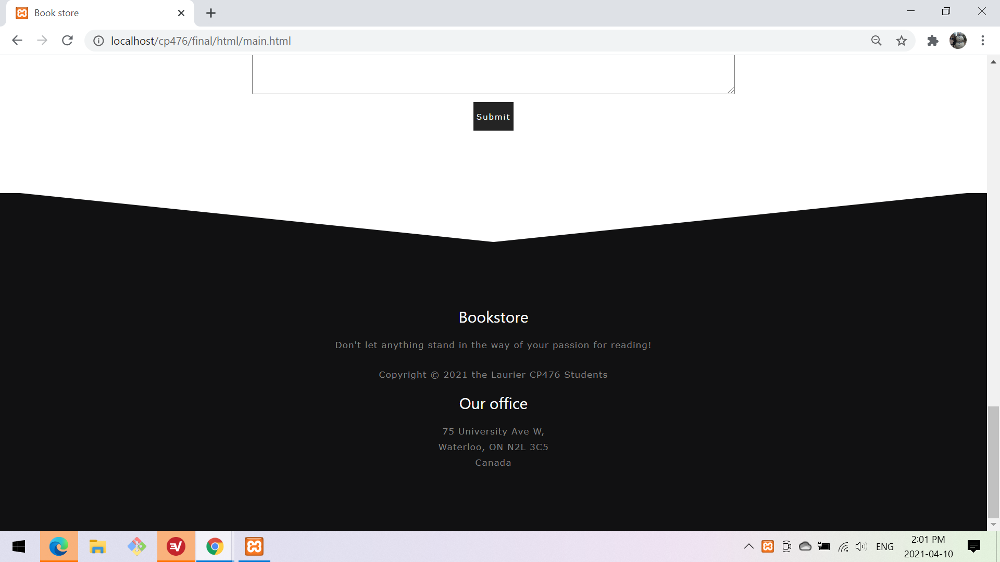
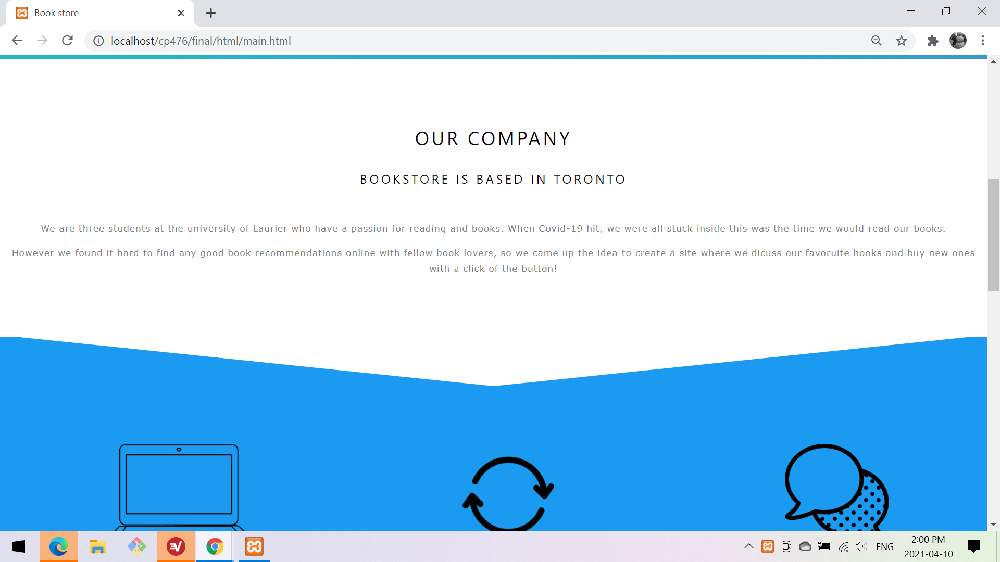
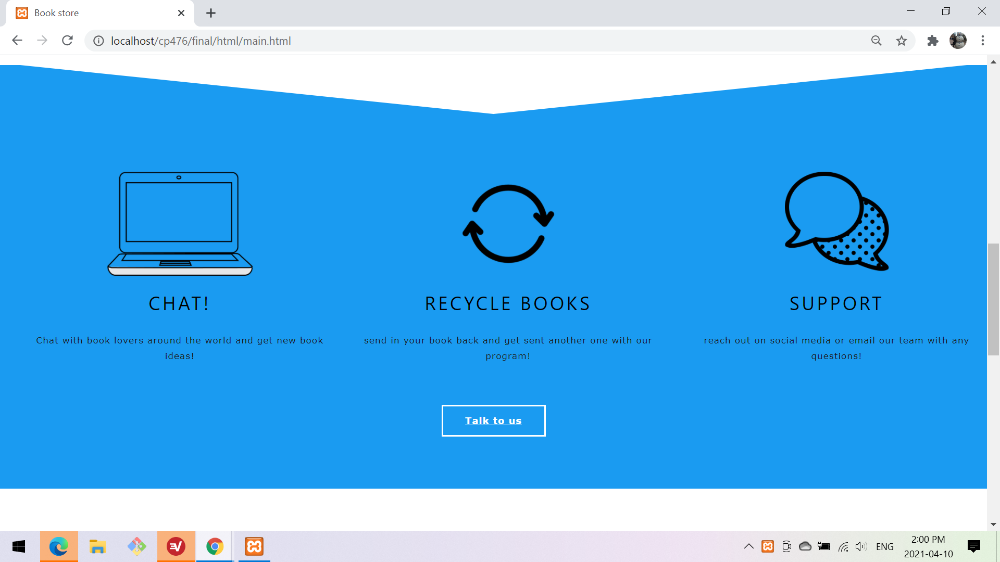
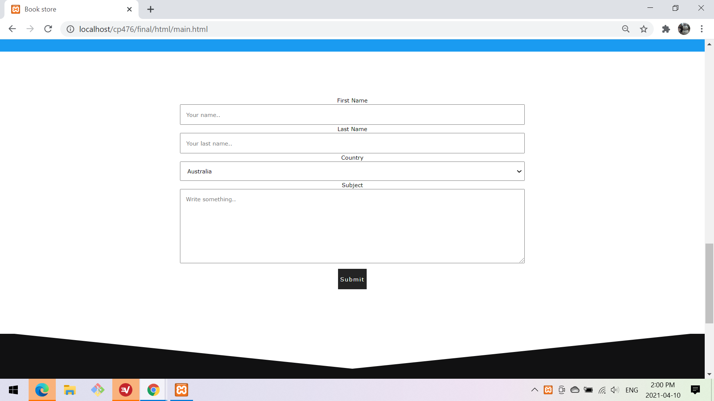
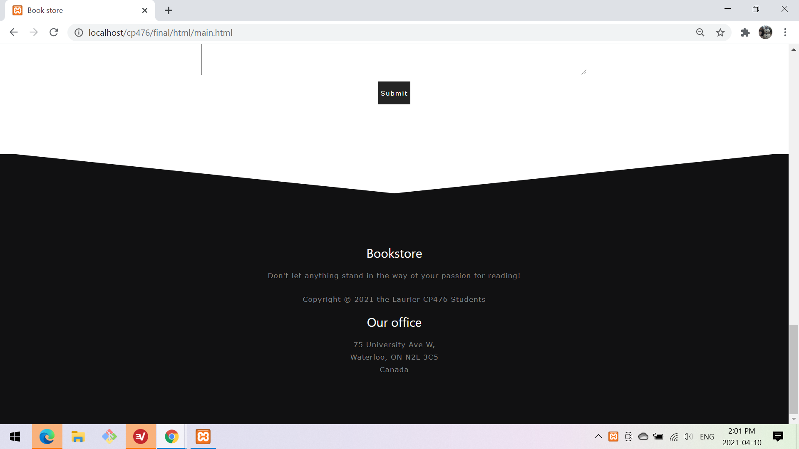

Author: Quinn Brimley, Steven Tran, Pauline Gwozdz
Date: 2021-04-09
Here users can Sign up to use our website, this will register the user into our db

Here users can Login using there user name and password (which the password is encrypted) and signs them in
 







Our main Page allows users to get to know what our company is about, it sets up links to sign up or login if they already have an account and tells them what this website is about but how company came about. If they have any questions, we have a button "talk to us" to let them reach out to us with any concerns in the contact form below. We set up 5 sections for the main page so that it would be easier for users to get the information they needed instead of clicking a bunch of links to get them what they want. How we did the gradient background for our index section was by using CSS. Under the function background I used the property "linear-gradient" and choose the colours we wanted to use on the website. After the colours are choosen I used an animation property so that it switches between the colours infinite. How the contact form was created was by creating a form and then labeling every inout we needed from them such as name, email and etc. We also set up a select option for country, at the moment we only have 3 options for country but they can select any of the 3 when completing the form. The whole main page was mainly focussed on styling through our CSS file, and includes all the little things such as a hover over a button, the background, and the transition from which section which we used svg to create that cut slick look for a smooth transition. What we used in our main, we then took to use to help implement our other pages as well to keep a theme.
Users can search for any book here and view details about them by clicking the "Details" button

User profile shows all comments made by the user and all recommended books that others have recommended to them

Here users can see details about the book, like a description and the publisher.
The user can also find where to buy the book by clicking the buy button
Lastly the user can comment about the book, this shows all comments by other users and there own comments with timestamps of when the comment was posted
References